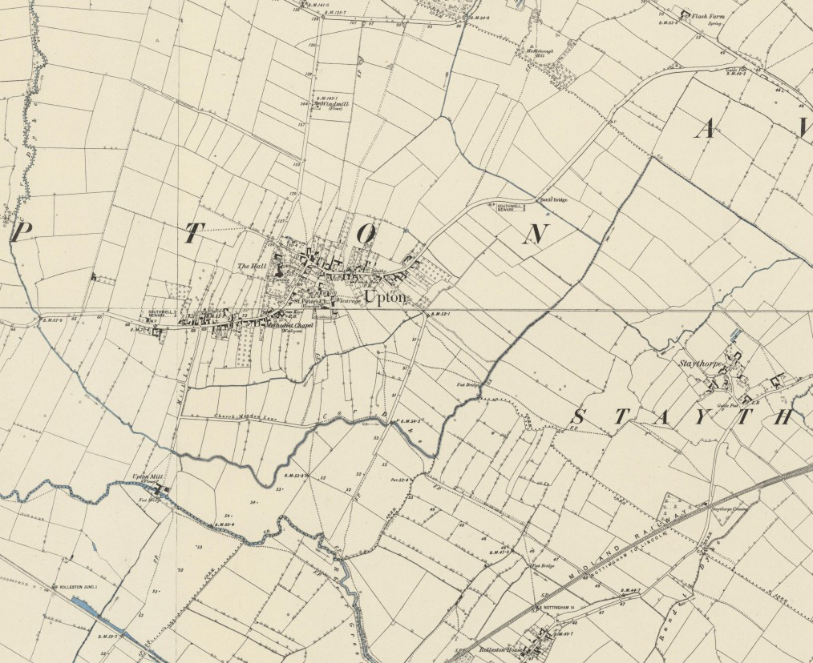
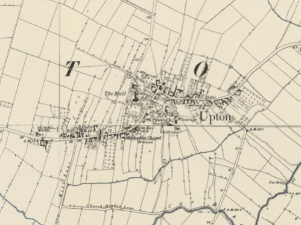

| Follow the above link to the main page for this topic or click the graphic below to visit the Homepage. |
 | Upton near Southwell Nottinghamshire, England Jess Atkins and Hilary Hallam of Lincolnshire, UK Dorothy Dowgray, New Zealand Lucrezia Herman, Don't Blink Productions, Nottingham, UK Lisa Maurier of Lincolnshire, UK Bill Coldham of Oxfordshire, UK |
| Welcome to Upton Near Southwell, Nottinghamshire | |
 Photo Courtesy Lisa Maurier | Upton is a handsome village and parish, pleasantly situated on a gentle declivity, two and a half miles east of Southwell. Its parish is in the liberty of Southwell and Scrooby, and contains 640 inhabitants and 1,408 acres of land, enclosed in 1795, and exonerated from tithes by allotments to the vicar and appropriator. The Rev. J. Banks Wright is lord of the manor, and owner of about 60 acres of land. There are a few other small freeholders, but it is mostly copyhold under the Archbishop, or leasehold under the Chapter of Southwell. The latter are appropriators and patrons of the vicarage, which is valued in the King's books at £4 11s 5½d, now at £91, and is enjoyed by the Rev. Frederick William Naylor, who erected a neat Sunday School in the village, and resides at the vicarage house, a neat mansion erected a few years ago. The church is a small gothic fabric, dedicated to St Peter, with a chancel and handsome tower, in which are four bells. There is a small Methodist chapel.
Upton Hall is the delightful seat of the Dowager Lady Galway. It is a large, elegant mansion, surrounded with pleasure grounds, from which extensive and beautiful prospects are seen. It was built by the late Thomas Wright Esq., on the site of the old manor mouse. J.C. Wood of Normanton, and W. Esam of Averham Park have estates here. [White's Directory of Nottinghamshire 1853] For news, information, and current events, please visit Upton Parish Council and be sure to read the monthly newsletter, the Upton Tonic. |
| A very old cottage at the intersection of Church Lane and Main Street in Upton. The building itself would have existed in the 17'th century when our Cullen ancestors lived in the village. Bill Coldham, a former resident of Upton, provides us with a lively account of how this thatched cottage has been put to good use in more recent times. His recollections are included below for your enjoyment. Photo courtesy Dorothy Dowgray. | |
| "Regarding the thatched cottage at the junction of Church Lane and Main Street... The road through the village from Southwell to Newark was called Main Street, and every household along its length had the same address for postal deliveries, i.e. Mr and Mrs Coldham, Main Street, Upton, Nr Newark, Notts... or Mr Fred Trueman, Main Street, Upton, Newark, Notts., etc, etc. The post woman in my day being Miss Smithson knew everyone in the village so it didn't give a problem. However the mail is now delivered from Newark and the population changes more today so the houses have been numbered to facilitate postal deliveries just in the last year. Back to the thatched cottage... behind the cottage was the village bakery set back from Church Lane. It was owned by Mr Harry Foster and later by Ernest Brailsford who was the baker. The cottage was used by Mr Foster for his office and there was another door fronting the village green which was the door to the bakers shop from which he sold his bread... and very delicious it was too, all baked daily. Ernest used to bake it and then deliver it on his rounds through the village and other neighbouring villages as well as the outskirts of Southwell. My Mum used to send me for a loaf in the late thirties and early forties and it cost the princely sum of fourpence halfpenny (in old pounds shillings and pence money). That is the equivalent of about 4 cents in todays US money. I believe the bakery ceased functioning about the late 60's or near that, although someone in the 1990's did try to revive the thatched cottage as a general village store but after a couple of years he closed it and went to New Zealand. The front of the shop part of the thatched cottage faced the village green which was planted mainly with Bramley Apple trees, a product of the Merryweather horticultural family from Southwell... an accidental hybridization... the first tree is still preserved in Southwell and still bears fruit. It's now well propped up and is looked after by experts from Wye College in Kent which is part of London University. The family of Harry Foster, the owner of the bakery, still lives in Upton today. Prior to the Foster family taking it over, it was originally the village post office, and most likely the first one because it served that purpose in the 19'th century. The Fosters took it over sometime from the latter part of the 1800's to the start of the 1900's. Since the turn of the 20'th century the Post Office moved three, if not four times up till the late 1900's when the village lost that local service, the mail being delivered from Newark." - Bill Coldham, Oxfordshire, UK | |
 Church Lane, Upton, Nottinghamshire | "This picture is taken halfway down Church Lane. Just to the right and to the rear of the camera, "off picture" is Church Farm with its sheep dip alongside the lane. The farm belonged to Mr William Hare until about 1975. He was an arable farmer but also dealt in cattle and sheep. He used to buy flocks and herds and fatten them up for market on the rich pasture near the farm. The dipping was an occasion for the boys of the village to witness... a sort of spectator sport I suppose with the sheep being counted, dipped, and penned." |
"Before Church Farm was the bakery mentioned in the "thatched cottage" photo. The cottages on the right of the picture were inhabited by three families!!... the Pailings, Rawsons, and Brooks. The picture shows the buildings to have been extensively modernised. It is noted that at least one window has been removed and bricked in so it would seem that the three have now become one residence. Mr Charlie Brooks clocked up a hundred years of age. Mr Bert Pailing's son became the President of Nottinghamshire Cricket Club after being a player. Mr William Hare's grandson was the Full Back for the England Rugby Union Football team in the 1970's. My Grandfather, Robert Coldham, was the stockman at Church Farm for William Hare. The first building on the left is the Parish Room, or as it is most likely known today... The Village Hall. It is an old tythe barn which was modernised single handedly by the Rev Percy Leeds when he was well into his seventies. The last building on the left with the chimney stacks is the vicarage which is now a private residence. Opposite the vicarage was a footpath to the right which led to the main door and porch of the church. Also to the right of the picture would be the entrance to Frank Wilkins workshop and cottage. He was a joiner and carpenter and made all the coffins for burials. He was also the Parish Clerk. If the camera could have continued down the lane there would have been a steepish decline across a field to the village cricket field of my day. To get to it an open sewer had to be crossed. Up to about 1960 or so... perhaps later, the village was served, if you could call it that, by three open sewers. These are now thankfully no more and proper drainage exists." - Bill Coldham, Oxfordshire, UK | |
 Main Street, near the center of Upton | This is the view from Main Street, facing west, near the center of Upton. The village green, now known as 'the square', is at the center of the photo. The thatched cottage is visible on the left, located at the intersection with Church Lane. If one were to take a left just before the cottage, heading south onto Church Lane, after a short distance one would arrive at the view found in the photo discussed above. Bill Coldham continues with some descriptions of life at the village centre... |
"This is the centre of the village - the photo is taken from the Newark end of the village approaching the Southwell end. The village green had more apple trees in the 30's, 40's, and 50's and the footpath cutting across the green didn't exist. Behind the village green was the Council depot for storing road materials, aggregate, salt and sand, the latter two were stockpiled for gritting the roads in winter when the weather was inclement with frost and snow. My father, Fred Coldham, looked after the depot as part of his job on the highways and bridges department and during the very bad winters, especially in 1947, he would be called out in the middle of the night to go with a gang gritting by truck along the main roads and the by-ways. In those days it was a manual operation and very labour intensive. I believe the depot is no more and a house was built on it or near it, possibly for Mr Ernest Brailsford when he took over the bakery. Incidentally my Dad also had the job of picking the apples if there were any left after the village lads had been at them! The red telephone box is listed and has been in situ since the 1930's. Directly opposite the phone box was the post office and shop which was run by Mr and Mrs Ankers. Jim Ankers had another contracting job with the Electricity Board so Mrs Anker became the vitual postmaster. They had a daughter, Marion. The Post Office was previously the Reindeer Public House. The road to Southwell and Mansfield takes a sharp left hand bend at the far extreme of the picture. The houses facing the road seem to have changed somewhat. Mr Cyril Suter and his mother lived in the right hand house. They had a newsagent's business in Southwell which also served the surrounding villages. The left hand white house belonged to the Parker family. Bill Parker came back from the war and took over an electrical business in Southwell. Bill was a keen choir member at the church and was also a bell ringer. Directly behind, and slightly to the left of that group of houses is the drive-way to Upton Hall, now the Horological Institute premises. In the war years it housed a School for the Blind from Brighton on the south coast. Later it was to become a Roman catholic Seminary... St Joseph's priests were trained for missionary work in Africa. In the foreground of the photo to the right is a farm which belonged to one of the Trueman family... a long standing family in the village. Mr Trueman had a housekeeper by the name of Miss Watchorn. The house immediately to the left in the foreground is now called the Hollies and was at one time the home of the Fosters, however in my day it was home to another Trueman family. Just behind the camera to the left off-picture was an area called the sand-holes. There was always a bon-fire there on Guy Fawkes Night when most of the village attended. In later years this pastoral area was to see a housing development." - Bill Coldham, Oxfordshire, UK | |
 Entering Upton from the East along Main Street | This view is facing the southwest and entering Upton along Main Street on the village's east side. By the time we curve around to the right, near where Carr Lane cuts off Main Street to the south, we would be heading due west. If we were to traverse this same distance again, we would be nearing the intersection with Church Lane and we would come to the view in the photo immediately above. The white building near the center of the photo that steals the focus from the surrounding brick structures is Manor Farm. |
"This is the entrance to the village from Newark via Kelham, Averham and over Battle Bridge ( so-called due to the activities at that location in the Civil War ). The entrance on the right was the driveway in the 30's and 40's to the large house of Mr and Mrs Abbot called North House. Mr Abbot was the owner of Abbots Boiler Works in Newark. ( I used to deliver papers in the village as a boy and Mr Abbot was the only customer to take "The Observer"... I was intrigued by this at the time because it was not a "capitalist" paper... Mr Abbot in my view was more akin to "The Times"!! ). On the left hand side were two farms. The building painted white in a sort of mock-Tudor style was unlike that as I remember it. It is Manor Farm and belonged to a Mr Shacklock who never lived there. My Grandfather Robert Coldham, worked for Shacklock. Mr Bill Cumberland as I recall was the farm manager. The farm was sold by Shacklock after an anthrax outbreak and then my Grandfather went to work for Mr. Hare at Church Farm. The photo is not all that clear in the distance, but after Manor Farm was the Browns Blacksmith's workshop and forge, not extant as I knew it due to the demise of the horse. Mr Harry Brown lived in the next row of cottages ( the front door has a slight red tinge in the picture ). Between the blacksmiths forge and the cottages is an entrance to Carr Lane. This was an unmettalised narrow track only passable on foot or by horse or tractor. It was the partial route for pedestrians to access Rolleston Junction... a railway connection to Lincoln and Nottingham. The entrance on the left on the bend of the road is to Glebe Farm which the Reeves family worked for a century or more. Prior to Glebe Farm were a series of cottages. I remember Miss Bottomley lived in one of them with her Father. She was the head teacher at Rolleston village school to which she walked every day down Carr Lane and across the fields." - Bill Coldham, Oxfordshire, UK. | |
 |  |
 | |
Jess Atkins and Hilary Hallam, relatives of the Cullen family in England, have gone to great lengths to collect information on the Cullens in Lincolnshire and Nottinghamshire. They have personally visited the areas where the early families lived and were thoughtful enough to take photographs which have been forwarded for posting to this webpage. I am in the process of researching the history of the church building itself and would be grateful to anyone who could help out in this area. In the bottom photo, there are two gravemarkers near the center of the picture - both are Cullens. The left stone is that of Ann Cullen who died on the 23'd of August,1720. Next to her is Gervase Cullen who died on the 2'nd of July,1717, at the age of 55. This Gervase would then be the son of Gervase Cullen and Katherine Robinson who were married on the 28'th of January,1648 at Upton, Nottinghamshire. Their son Gervase was born on the 22'nd of September,1662. Gervase's wife Ann would then likely be Ann Goodwin and their marriage occured on the 12'th of November,1695 at Upton. This family is on the main line of the Rude Forefathers.
Their is another gravemarker at the extreme right side of the same photo. This is Jane Cullin, who died on the 22'nd of July,1771, at the age of 13. Jane was the daughter of John & Jane. I don't have a birth record for the young Jane but there is only one recorded marriage of a John Cullin at the proper time: John Cullin married Jane Denton on the 13'th of February,1753, at Edwinstowe. Another possible child from this marriage is Samuel Cullin, who was christened on the 22'nd of April,1756, at Edwinstowe. His father's name is given as John Cullin. The members of this family are not known to be related (at least not yet!).


We should extend many thanks to the National Library of Scotland, in particular their Map Images website, for these excellent maps of the village and parish of Upton, Nottinghamshire. For many years I've wanted maps of sufficient scale to be able to study in detail the village of Upton and the surrounding fields and landmarks. For our purposes though, the most modern up-to-date map is not quite what we need for our studies of the village our Cullen ancestors lived in. The Ordnance Survey Maps were a great find. They have wonderful detail, they're loaded with information, and they are a high-quality reproduction of the originals.
The maps you see below are in JPG format and are the results of a laborious process where I had to stitch together many high-resolution screenshots into one seamless image. I went through this whole process twice: once for the wider view of the village and the surrounding fields, dykes, and other landmarks and the second time to capture the details of the inner village of Upton itself. In the end I was very happy with the results and I'm sure you will be too! Please feel free to download and use these maps to study and learn more about the village of Upton that was the home of our Cullen ancestors for hundreds of years. Click on the thumbnail images below and the high-resolution maps will load into your screen. You can save your map from there. In your spare time, please consider taking a stroll through the National Library of Scotland. They have a lot to offer besides their wide array of maps.
 Upton Village and Surrounding Fields and Landmarks 4056 x 3312 pixels, 2.17 MB |
 Details of the Village of Upton 1998 x 1499 pixels, 618.5 KB |

{kind=link}
{kind=link}